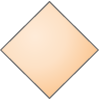
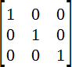
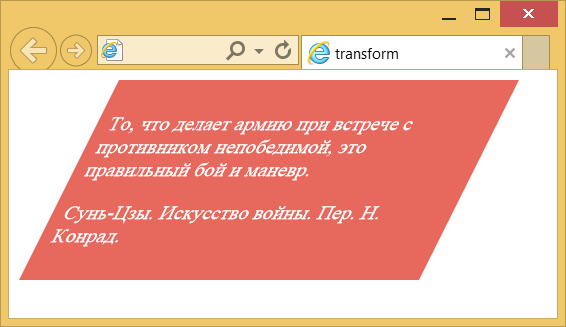

Матрица преобразований
Матрица преобразований предназначена для вычисления новых координат элемента с целью его трансформации и позволяет установить множество преобразований одновременно. Различают двумерную и трёхмерную матрицу, они отличаются друг от друга размером и пространством, на которое ориентированы. Поскольку двумерная матрица по размеру меньше и поэтому проще, на её примере рассмотрим общий принцип работы матриц.
Двумерная матрица
Преобразование с помощью двумерной матрицы происходит в плоскости экрана, при этом соблюдается условие, что линии всегда остаются параллельными, поэтому в качестве трансформации допустимы поворот, масштабирование, наклон и изменение положения, но никак не перспектива или нечто подобное. Это уже область работы трёхмерной матрицы. На рис. 1 показаны допустимые и невозможные преобразования, выполненные с помощью двумерных матриц.
 |  |  |  |
| Исходный элемент | Поворот | Наклон | А вот так сделать нельзя |
Рис. 1. Трансформация элемента
Сама матрица имеет размер 3х3 и в общем виде записывается так:

Иногда для простоты третью строку опускают, поскольку она не оказывает влияния на конечный результат. Новые координаты каждой точки элемента получаются путём умножения матрицы преобразований на матрицу координат.

И вычисляются по следующей формуле:
Роль каждого коэффициента матрицы представлена в табл. 1.
| Коэффициент | Преобразование | Описание |
|---|---|---|
| a |  | Изменение масштаба по горизонтали. Значение больше 1 расширяет элемент, меньше 1, наоборот, сжимает. |
| b |  | Наклон по вертикали. Положительное значение наклоняет вверх, отрицательное вниз. |
| c | Наклон по горизонтали. Положительное значение наклоняет влево, отрицательное вправо. | |
| d |  | Изменение масштаба по вертикали. Значение больше 1 расширяет элемент, меньше 1 — сжимает. |
| tx |  | Смещение по горизонтали в пикселях. Положительное значение сдвигает элемент вправо на заданное число пикселей, отрицательное значение сдвигает влево. |
| ty | Смещение по вертикали в пикселях. При положительном значении элемент опускается на заданное число пикселей вниз или вверх при отрицательном значении. |
Для матрицы преобразований применяется функция matrix(), внутри скобок перечисляются коэффициенты.
transform: matrix(a, b, c, d, tx, ty)
Единичная матрица
Если в матрице коэффициенты a и d равны 1, а остальные элементы матрицы нулевые, то такая матрица называется единичной. Эта матрица применяется по умолчанию, поскольку не приводит к какой-либо трансформации элемента. Так что если необходимо произвести только один вид преобразований, единичную матрицу надо брать в качестве основы.

Масштаб по горизонтали
Чтобы увеличить размер элемента, допустим, в два раза по горизонтали, коэффициент a следует установить равным 2, а остальные коэффициенты оставить как в единичной матрице.

Считаем новые координаты:
x' = 2*x + 0*y + 0
y' = 0*x + 1*y + 0
И окончательно:
x' = 2x
y' = y
Код для масштабирования показан в примере 1.
Пример 1. Масштабирование
<!DOCTYPE html>
<html>
<head>
<meta charset="utf-8">
<title>Трансформация</title>
<style>
.t {
background: #e7685d; /* Цвет фона */
color: #fff; /* Цвет текста */
padding: 10px; /* Поля */
width: 300px; /* Ширина */
transform-origin: 0 0; /* Точка трансформации */
transform: matrix(1.2, 0, 0, 1, 0, 0); /* Трансформация */
}
</style>
</head>
<body>
<div class="t">
<p>То, что делает армию при встрече с противником непобедимой,
это правильный бой и маневр.</p>
<p>Сунь-Цзы. Искусство войны. Пер. Н. Конрад.</p>
</div>
</body>
</html>Результат данного примера показан на рис. 2. Блок с текстом растягивается на 20% по горизонтали.

Рис. 2. Изменение масштаба текста
Отражение
Для отражение элемента по горизонтали следует установить a=-1, по вертикали d=-1 или оба значения одновременно для отражения одним разом по горизонтали и вертикали.

В примере 2 показано отражение текста по вертикали.
Пример 2. Отражение
<!DOCTYPE html> <html> <head> <meta charset="utf-8"> <title>Трансформация</title> <style> .t { transform: matrix(1, 0, 0, -1, 0, 0); } </style> </head> <body> <p class="t">Через миг Алиса прошла сквозь зеркало и легко спрыгнула в Зазеркалье.</p> </body> </html>
Результат данного примера показан на рис. 3.
Рис. 3. Отражение текста по вертикали
Наклон
За наклон отвечают коэффициенты b и c, которые и влияют на вид элемента. Давайте установим c=1 и посмотрим, какие преобразования получатся.
x' = 1*x + 1*y + 0
y' = 0*x + 1*y + 0
x' = x + y
y' = y
Таким образом, меняется только координата x, которая увеличивается на значение y, что и приводит к наклону элемента. В примере 3 используется отрицательное значение коэффициента c для наклона вправо.
Пример 3. Наклон
<!DOCTYPE html>
<html>
<head>
<meta charset="utf-8">
<title>Трансформация</title>
<style>
.t {
background: #e7685d; /* Цвет фона */
color: #fff; /* Цвет текста */
padding: 10px; /* Поля */
width: 300px; /* Ширина */
transform-origin: 0 100%; /* Точка трансформации */
transform: matrix(1, 0, -0.5, 1, 0, 0); /* Трансформация */
}
</style>
</head>
<body>
<div class="t">
<p>То, что делает армию при встрече с противником непобедимой,
это правильный бой и маневр.</p>
<p>Сунь-Цзы. Искусство войны. Пер. Н. Конрад.</p>
</div>
</body>
</html>Результат данного примера показан на рис. 4.

Рис. 4. Наклон блока
Поворот
Поворот является комбинацией масштабирования и наклона, но чтобы сохранить исходные пропорции элемента преобразования должны подчиняться строгим вычислениям с использование синусов и косинусов.

Сам поворот происходит по часовой стрелке, α задаёт угол поворота в градусах.
Перемещение
За сдвиг элемента по горизонтали отвечает коэффициент tx, а по вертикали ty. Значением выступает число пикселей.
Трёхмерная матрица
Трёхмерная матрица имеет размер 4х4 и применяется для преобразования координат элемента в трёхмерном пространстве. В общем виде она выглядит так:

Название «трёхмерная» лишь отражает тот факт, что матрица предназначена для работы в 3d-пространстве. Двумерная матрица является её частным случаем и для размера 4х4 имеет следующий вид:

В чистом виде эта матрица применяется редко из-за своей сложности и наличия удобных функций для трансформации в пространстве. Если вам интересна тригонометрия и формулы преобразований одних координат в другие, то почитайте этот материал.
https://developer.mozilla.org/en-US/docs/Web/CSS/transform-function

Все материалы сайта доступны по лицензии Creative Commons «Attribution-NonCommercial» («Атрибуция — Некоммерческое использование») 4.0 Всемирная, если не указано иное.